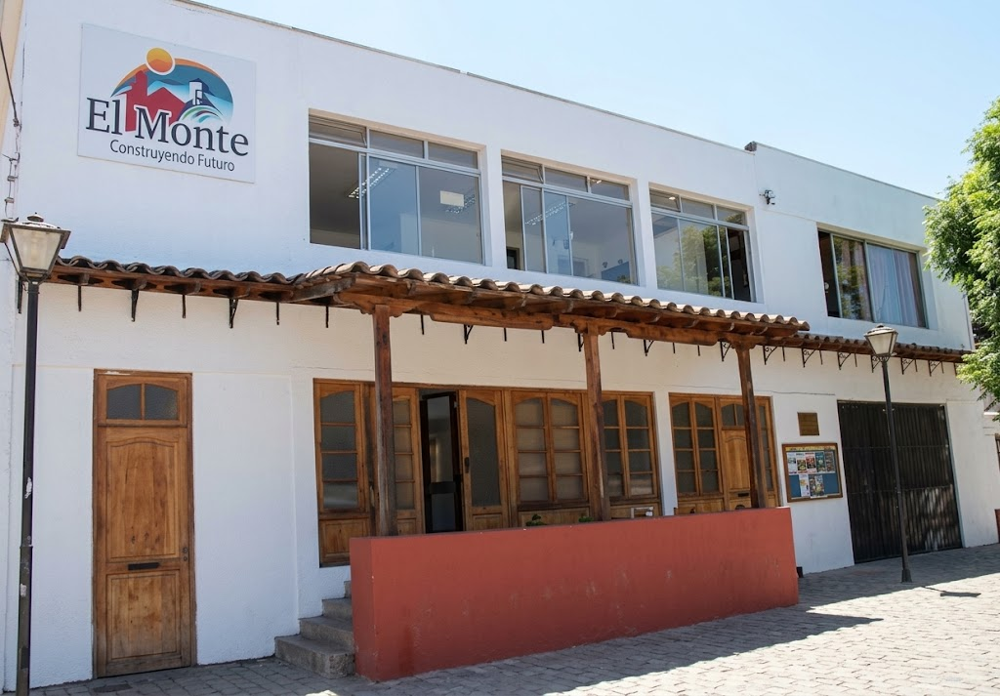

Dirección municipal
Dirigir, administrar y vigilar el buen funcionamiento general de la Municipalidad de El Monte.
Conoce a la máxima autoridad de la comuna, sus principales funciones y los canales institucionales de contacto de la Alcaldía de El Monte.

Como máxima autoridad comunal, la Alcaldía dirige y administra el funcionamiento general de la Municipalidad de El Monte.
La Alcaldía encabeza la administración municipal y ejerce atribuciones vinculadas a la gestión, representación y conducción del gobierno local.
Dirigir, administrar y vigilar el buen funcionamiento general de la Municipalidad de El Monte.
Administrar los bienes municipales y los bienes nacionales de uso público que correspondan a la gestión comunal.
Convocar y presidir el Concejo Municipal, participando en la conducción del órgano colegiado comunal.
Conocer el Concejo →Representar judicial y extrajudicialmente a la Municipalidad de El Monte.
La Alcaldía encabeza la estructura municipal y se relaciona con las distintas secretarías, direcciones, departamentos y unidades responsables de la gestión comunal.
Ver organigrama municipalLa Cuenta Pública permite conocer avances, inversiones, proyectos y principales desafíos de la gestión municipal.